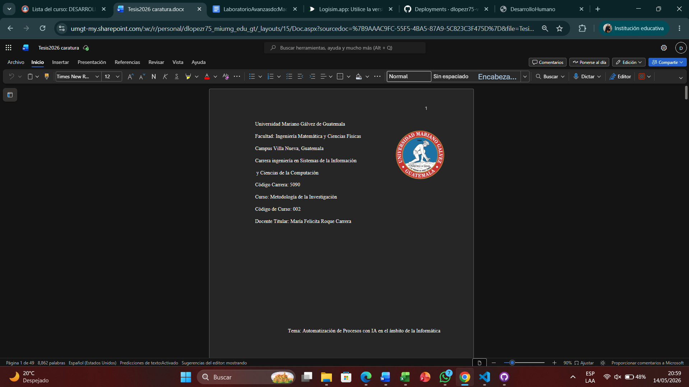
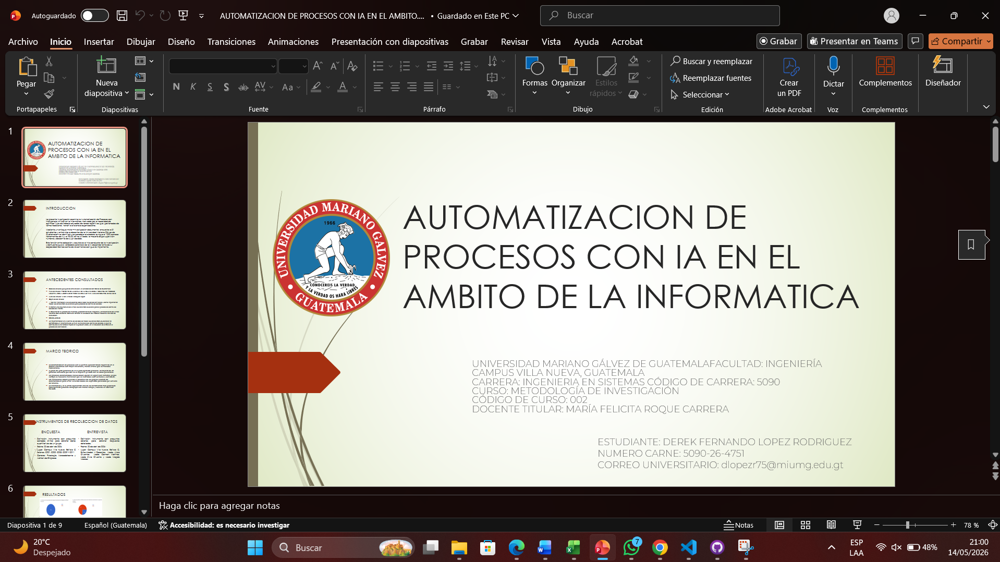
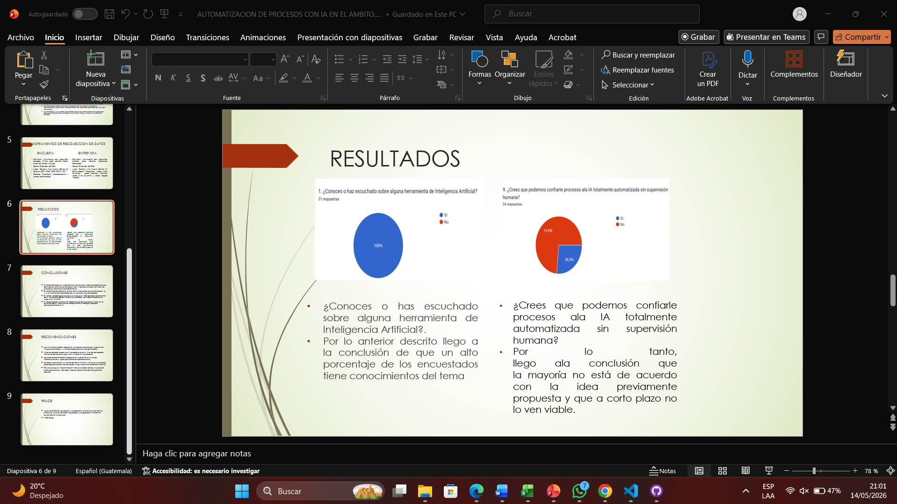

COMPETENCIAS ADQUIRIDAS ESTE SEMESTRE
Aplicacion de Normas APA
Durante este curso aprendi a aplicar las normas APA, En la cual tenia que modificar o aplicar varias opciones como aplicar sangria, justificar
texto, margenes,etc.
Redaccion de Documentos de Investigacion -40%
Tambien aprendi a aplicar correctamente la estructura de Cientificio, Tesis y tesinas.
Toma de Muestras -65%
Durante el proyecto aprendi a tomar muestras con formularios en linea para hacer estadisticas y estidis los cueles nos ayudaran
con nuestra hipotesis.
PROYECTOS REALIZADOS EN CLASE
PROYECTO TESIS
Proyecto parcial de realizar una TESINA sobre un tema que nos apacione llevar a cabo los pasos y estructura correspondiente
y realizar una expocion a otro salon
LINK DEL VIDEO
IMAGENES
 |
 |
 |